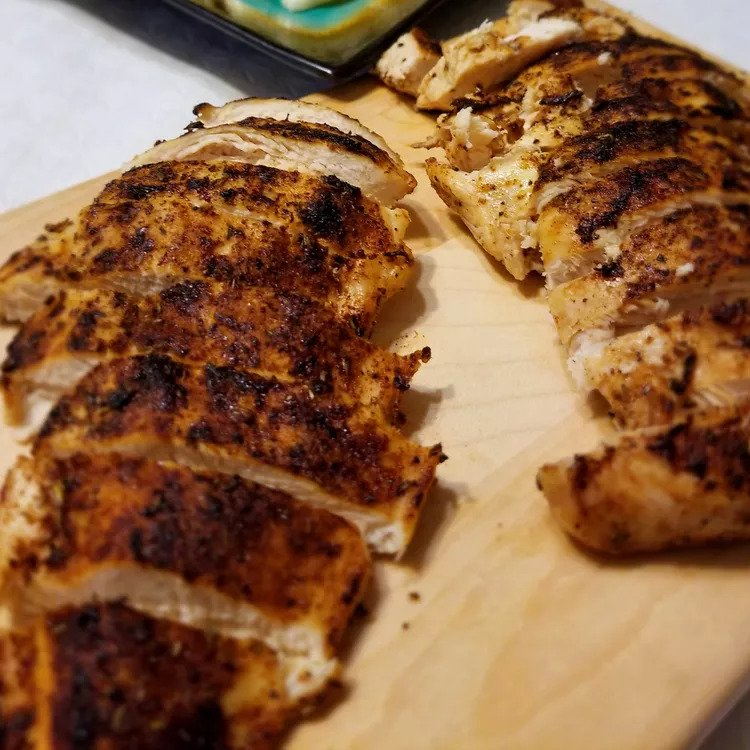

Blackened Chicken

Description
Blackened chicken is great on a summer's day with fresh corn and mashed
potatoes.
Ingredients
- 1/2 teaspoon paprika
- 1/4 teaspoon cayenne pepper
- 1/4 teaspoon ground cumin
- 1/4 teaspoon dried thyme
- 1/8 teaspoon onion powder
- 1/8 teaspoon ground white pepper
- 1/8 teaspoon salt
- 2 skinless, boneless chicken breast halves
- cooling spray
Steps
-
Preheat the oven to 350 degrees F (175 degrees C). Spray a baking sheet
with cooking spray.
-
Heat a cast-iron skillet over high heat until it is smoking hot, about 5
minutes.
-
While the skillet is heating, mix together paprika, cayenne, cumin,
thyme, onion powder, white pepper, and salt in a small bowl. Spray
chicken breasts on both sides with cooking spray, then coat evenly with
spice mixture.
-
Place chicken in the hot pan and cook for 1 minute. Turn, and cook 1
minute on other side. Transfer chicken to the prepared baking sheet.
-
Bake in the preheated oven until chicken is no longer pink in the center
and the juices run clear, about 5 minutes.
Return home